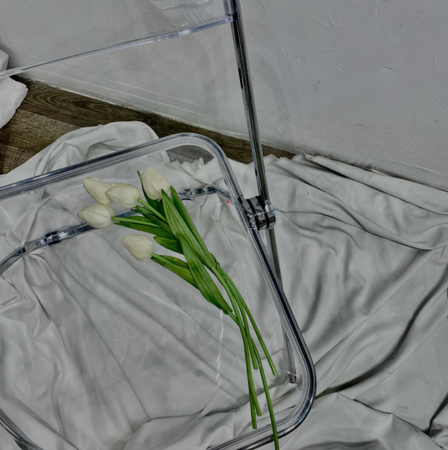
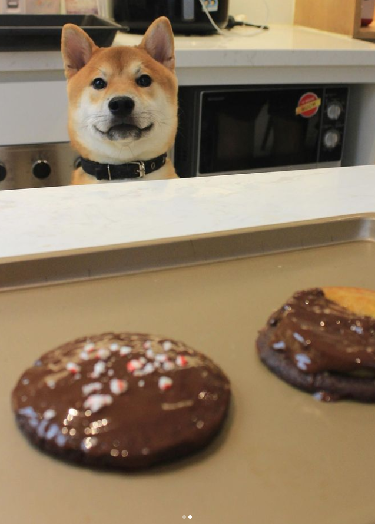
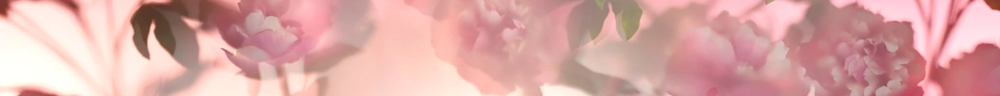

Chúc mừng sinh nhật bạn dduongggg, chúc bạn có những buổi cuối ở Abivin thật zui zẻ, sớm nghỉ ngơi đi du lịch và nhanh chóng mang bằng lái xe về nhá. À chục bạn thêm tuổi mới vẫn luôn xinh đẹp toả nắng rạng rỡ lung linh, bước ra đường thì trời sẽ đẹp, ngước mắt lên thời tiết sẽ luôn dịu dàng là lá la.
Và cũng nhân dịp sinh nhật bạn, mình có nhờ mấy bạn shipper gửi đến bạn một món quá nho nhỏ. Mình đặt Tiệm hoa lách cách một bó hoa với yêu cầu "nó phải là màu trắng và phải có tulip", và thế là bó hoa bạn cầm được ra đời. Bạn có nói là bạn thích hoa, thế mà mình lại lớ ngớ chọn box quà có kèm hoa khô (hay hoa giấy hoa lụa gì đó) tệ hết sức !!! Thành ra lần này quyết phải chọn bằng được một bó hoa tươi nè. À mà tại sao lại là tulip và tại sao lại là màu trắng vì nó liên hệ với món quà thứ 3 một chút, hơn nữa ảnh thứ 6 trên instagram của bạn là mấy bông tulip trắng trắng nên mình nghĩ rằng hẳn bạn cũng sẽ thích chúng, mình tin vậy :))
Tiếp tục với món quà thứ 2. Dĩ nhiên khum phải con shiba đáng yêu đang nghệt ra chờ đợi y như lúc mình ngồi gõ mấy dòng này và tự hỏi bạn đọc đến đây có thấy mình hâm nặng khum ... Món quà này vón dĩ là muộn tặng bạn từ hôm 8-3 rồi, đó là chút cookies mềm mềm của Cookies by Sloths. Tiêu chí vẫn là một thứ gì đó nhẹ nhàng vui vẻ vào đầu giờ chiều. À mà đặt rồi xong tự dưng cái thấy bạn đã follow Sloths trên IG rồi mới lớ ngớ lo bạn biết Sloths rồi thì chả còn gì mới mẻ nữa cả @@
Cuối cùng là món quà đáng lẽ ra sẽ là thứ 3 (vì giờ nó thành món quà đầu tiên mất rồi) - Jo Malone - Peony & Blush Suede. Món quà này đã được lên ý tưởng khá lâu. Với tầm hiểu biết còn nhỏ của mình về nước hoa thì bất kì khi nào nhớ về bạn, đầu mình sẽ hiện ra Jo Malone và mình tự hứa rằng sẽ phải tặng bạn một chai này vào một ngày đẹp trời. Hơi tiếc là với khả năng của mình hiện tại mới chỉ có thể tặng cho bạn một chai bé xinh 30ml mà thôi :(
Tại sao lại là Jo Malone và tại sao lại là hoa Tulip thì vì cả 2 thứ này đều gợi đến hình ảnh một người con rất gái xinh đẹp, rất nhẹ nhàng, có nét sang trọng, có sự nữ tính, và rất tinh tế... vậy nên mình nghĩ nó là để dành cho bạn vậy. Nói riêng về chai Jo Malone chút thì chai này thuộc nhóm hương hoa cỏ, độ lưu hương kém chỉ trong 2 3h (hoặc hơn) tuỳ theo da người xịt và toả hương trong vòng khoảng 1 cánh tay. Như mình có kể lể về việc ngắm bạn chọn nến là một phần lí do dẫn đến việc mình chọn mùi Peony này, nó sẽ hơi có mùi hoa ở những giây đầu và ngọt nhẹ nhẹ dần về sau để bám hướng tốt hơn. Và tại sao không phải là Versace hay Channel...cùng vô vàn nhà nước hoa khác nổi tiếng với những chai nồng độ nước hoa cao, toả hương mạnh mẽ vì đơn giản là mình muốn mùi hương này chỉ ở riêng bên bạn hoy, để bạn có những sáng cafe nhẹ nhàng thoải mái và không quá lấn át mùi hương đồ uống nữa.
Thôi thì bốc phét nhiều cũng nên có điểm dừng. Chúc bạn dduongggg sinh nhật thật vui vẻ nhé. Mong là bạn vẫn đọc hết đến đây rồi đừng tiện tay block mình vì mình đã kịp lưu lại cái ảnh gật gật kia trước khi bạn nghĩ cách xoá trên telegram rồi hí hí